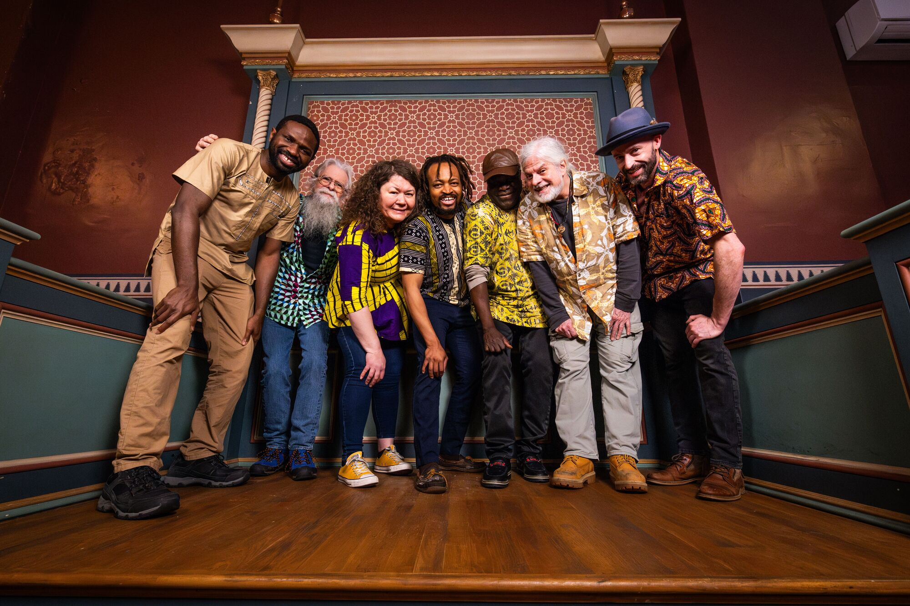
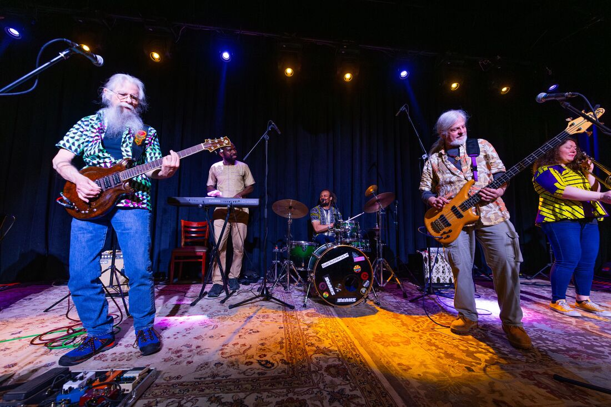

MANY ROOTS. ONE RHYTHM.
AFROBEAT / REGGAE / ALBANY, NY
Good music.
Deep roots.
Come dance.
Ghanaian rhythms. Reggae soul.
A sound that brings us together.

MIXED ROOTS · ONE LOVE01 / THE BAND
Different journeys.
A shared groove.
Rooted in Albany. Connected to the world.
Led by drummer and vocalist George, Mixed Roots brings together musicians with different backgrounds and a love of music that moves people. Traditional African rhythms meet reggae, guitar, bass, keys, percussion, and horns.
From Ghana and Nigeria to Ireland and New York, those influences come together in an energetic, danceable sound. Music is love. One love.
Explore the archived band story ↗
A band that plays exotic grooves mixed with danceable beats
Under the leadership of the drummer, George, Mixed Roots is a rare breed of bands. All are from different areas, and now call Albany, New York home.
Brian, Irishman and bassist, plays with multiple upstate New York reggae groups as well as Mixed Roots. Calling on his expertise from these, he offers flavors from the Grateful Dead and others.
Pete, our guitarist and also an Irishman, plays with passion and expertise with decades of practice and performing reggae and rock and all places in between.
The horn section—featuring saxophonist, Dillon and trombonist, Catherine—consider themselves local also. They add local flavor while maintaining respect to their worldly interests.
Gideon melts the keys as he provides chordal structures influenced by his Nigerian upbringing.
Seth, showing his Ghanaian roots, incites danceable beats on the hand drums.
George, lead drummer and vocalist, shares his vocabulary of AfroBeat and reggae with Mixed Roots as he learned growing up in Ghana also.
Together, this band plays with energy emerging from their mixed roots. They are excited to share their styles with you!
This biography comes from the original site. The band’s current lineup should be confirmed before public launch.
02 / IN THE ROOM
Better live.

Bring your dancing shoes.
Explore moments from past shows, from Albany’s stages to festivals around the region.
Troy, New York · June 27
Lake George, New York · August 21
New dates will be posted here when confirmed. Follow the band for announcements.
Explore the full performance archive ↗03 / MOMENTS & MEMORIES
The people.
The energy.
Original photographs, recovered
from the band’s website.
04 / IN THE COMMUNITY
Music that
brings people together.
The original site featured press coverage of a benefit for asylum seekers in Albany.
Read the Times Union story ↗05 / LET’S MAKE SOME MUSIC
Good people.
Great night.
Mixed Roots.
Have a venue, festival, or event in mind?
Get in touch with the band to check availability.